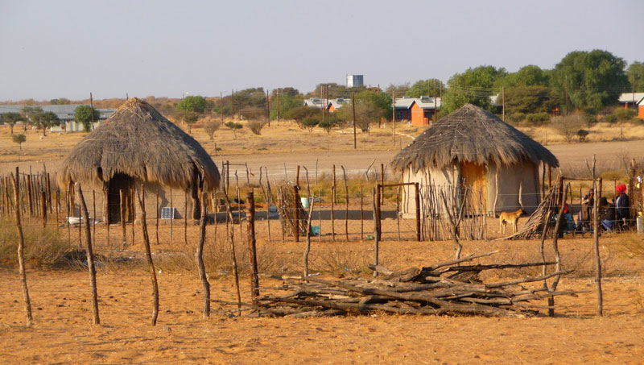

Kasane is a town in the northeastern corner of Botswana, near the borders with Namibia, Zambia and Zimbabwe. It's the gateway to Chobe National Park, known for the herds of elephants which converge on the Chobe River in the dry season. Caracal Biodiversity Center shelters rescued wildlife. The Chobe Crocodile Farm is nearby. East of town, the Kazungula Ferry crosses the Zambezi River, connecting to Zambia. Kasane is both the administrative centre of Chobe District and gateway to Chobe National Park. The town is situated about eight kilometres to the east of Kazungula, a village in Botswana. It also is an important point of disembarkation for Victoria Falls in Zimbabwe and Livingstone in Zambia which are both close-by to Kasane.